Replace the green screen outside a real window with your own world, and make it move with the camera using 2D stabilisation data.
5 illustrated stagesOne lesson2D tracking · Stabilize 2D (Invert) · keying · set extensionPractice plates: Hollywood Camera Work
The demo composite, made in Blender’s compositor with this tutorial’s steps. Plate: Hollywood Camera Work. View outside: our Winter Cottage render.
Track. Key. Extend.
Use your own Winter Cottage render from the bootcamp as the world outside.
My supports
Turn on any help you want. Your teacher may have set some for you. They change how the guide helps, not what is assessed.
Shot brief
A new view outside.
You are given a push-in on a window with green screen outside. Deliver the shot with your own view outside, locked to the window, then a change of the director’s choosing.
You will hand in
A screenshot of your node tree
The finished shot as an MP4
The director’s change, with a three-sentence explanation
Credits for the plate and the method
Footage and credits
The plate is from Hollywood Camera Work. You may use it and post your results with credit, but do not re-upload the plate itself. Use only background images you made or have the right to use.
Sets are built indoors, so what is outside a window is added later. Set extension lets one room be in any city, season or planet, and is one of the most common invisible effects.
Knowledge first
Why this works.
2D tracking is enough for a flat surface
The green screen is flat, so three markers on it describe its shift, rotation and scale in the frame. No 3D solve is needed.
Stabilise, inverted
Stabilisation cancels a shot’s motion. Inverted, it gives that motion to another image.
Depth cues
The outside world should be softer and behave as further away than the candles in front.
Design principles in the shot
Depth: sharp candles, soft view. Contrast: warm room, cool outdoors. Framing: the window frames the world outside.
What this assesses
Skills you will show.
Skill (sprint skill ID)
Where you show it
Render · BL-RND-01
Steps 1 and 5
Lighting and colour match · BL-LGT-01 · PS-LGT-02
Step 4
Critique and refinement · GD-CRIT-01
Step 5
VFX craft (2D tracking, stabilisation data, keying, set extension)
Steps 1–4
Primary achievement evidence: the director’s change (step 5). Guided steps and supports are recorded separately from achievement. Shot-library option in sprint mm12-26-s08. The registry has no VFX skill IDs yet; see the animation skills proposal.
Session A · Lesson 1 · VFX shot library
Change what is outside the window.
The camera pushes in on a window. Outside is a green screen. You will put your own world out there, and make it move with the camera.
TODAYTrack the markers (15 min), stabilisation data (10 min), key the window (15 min), place and move the view (15 min), director’s change (10 min).
01
Load the plate and track the window markers
Start here: read or listen to the theory deck (about 8 minutes, three checkpoint questions), then come back.
IN SHORTOpen plate; pixel aspect; Location & Scale; markers at frame 101; track both ways; keep the three full-length ones.
READ ALOUD
DOCUMENT: Window_YourName.blend · the Window Set Extension plate SELECT: Movie Clip Editor, Tracking mode TOOLS / ROUTE: Motion Tracking workspace · Ctrl+click · Ctrl+T · Shift+Ctrl+T
Download the Window Set Extension plate from Hollywood Camera Work and unzip it into your project folder.
New file. Add the Motion Tracking workspace, open the first plate image, click Set Scene Frames and Prefetch. Set Pixel Aspect to 1.5.
Tracking Settings: Pattern Size about 60, Search Size about 150, Motion Model Location & Scale (the squares grow as the camera pushes in).
Go to frame 101, where all four pale-green squares are visible. Ctrl+click a marker on each. Track forward (Ctrl+T), return to frame 101, and track backward (Shift+Ctrl+T).
Three markers survive the whole shot. One is hidden by the tree and the candles for part of it: leave it out.
The demo shot (real Blender render, 9 seconds). Plate: Hollywood Camera Work. The view outside is our own Winter Cottage render.
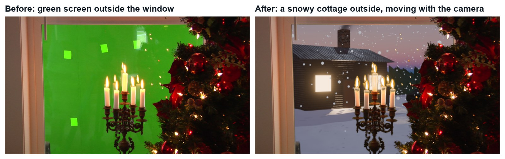
Real frames: the plate, and the same frame with a new view outside.
STEP CHECKLIST
GLOSSARY
Set extension: Adding scenery beyond what was really there
Location & Scale: A motion model for patterns that grow or shrink
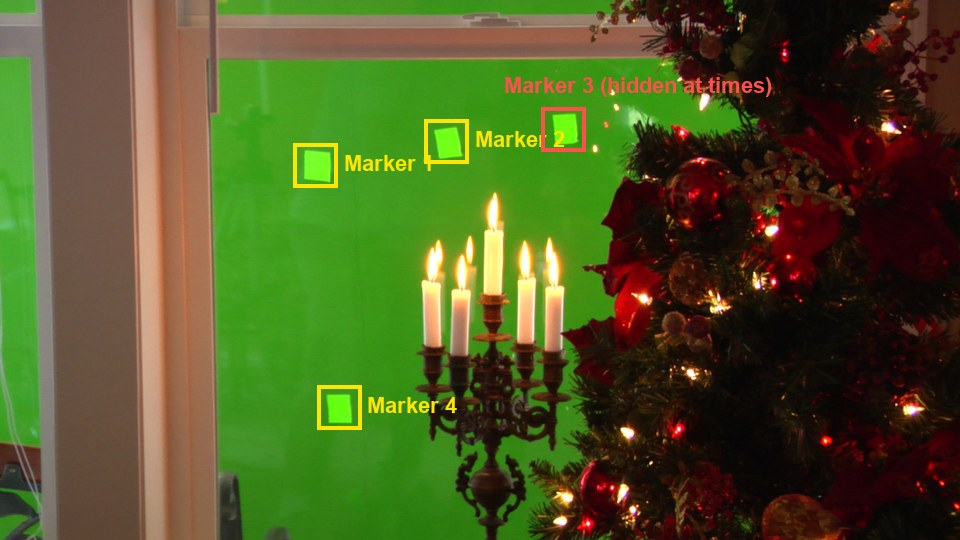
Frame 101 of the plate with the demo’s four markers. Marker 3 (red) is hidden for part of the shot, so only the other three are used.
WHYThe squares are stuck to the green screen, which stands in for the world outside. However they move, your new view must move.
CHECKThree markers tracked from frame 1 to 210.
FIXA marker jumps to a candle flame? Shrink the Search Size, re-place it and track again.
WORKED EXAMPLE · DIFFERENT OBJECTIn the demo, markers 1, 2 and 4 track all 210 frames; marker 3 only frames 13–153.
STRETCH (AFTER THE CHECK PASSES)Add extra markers on the window frame corners and compare.
Method basis: H1 · B1. Values and sequence are authored for this project.
02
Turn the tracks into stabilisation data
IN SHORTStabilization tab; 2D Stabilization; add tracks for location; Rotation and Scale on; add tracks; anchor frame 1.
In the Clip Editor sidebar open the Stabilization tab and tick 2D Stabilization.
Select your three full-length markers. Under Tracks for Location click + to add them.
Tick Rotation and Scale, and under Tracks for Rotation/Scale click + to add the same three.
Set Anchor Frame to 1 and turn Autoscale off.
The clip may now look frozen in the editor: Blender is cancelling the camera move. That measured move is exactly what you will give to the background.
STEP CHECKLIST
GLOSSARY
2D stabilisation: Measuring and cancelling a shot’s shift, rotation and scale
Anchor frame: The frame the stabilisation is measured from
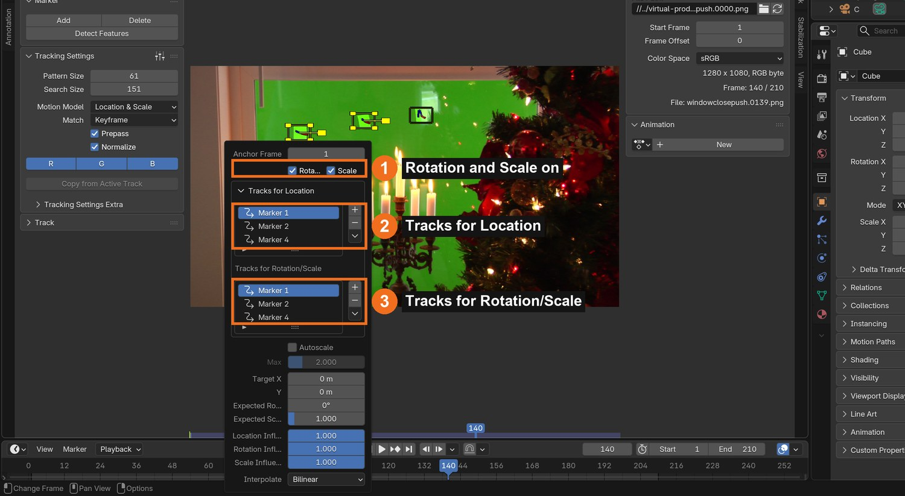
Real screenshot of the Stabilization panel in the demo: Rotation and Scale ticked (1), three tracks for location (2) and the same three for rotation/scale (3).
WHYStabilisation measures how the footage shifts, turns and scales. Used backwards (inverted), it makes another image shift, turn and scale the same way.
CHECK2D Stabilization on, with three tracks for location and three for rotation/scale.
FIXThe + button does nothing? Select the tracks in the clip first.
WORKED EXAMPLE · DIFFERENT OBJECTThe demo uses anchor frame 1, so the background is placed on frame 1 and follows from there.
STRETCH (AFTER THE CHECK PASSES)Scrub the clip with stabilisation on and off to see what was measured.
Method basis: B7. Values and sequence are authored for this project.
03
Key the green out of the window
IN SHORTPlate → Scale → Keying; pick the main green; Black and White levels; check flames and needles.
READ ALOUD
DOCUMENT: Compositing workspace SELECT: Keying node on the plate TOOLS / ROUTE: Add › Keying › Keying · Key Color eyedropper · Black Level · White Level
Compositing workspace. Add the plate as an Image (sequence) node, a Scale node set to Render Size › Stretch, and a Keying node.
Pick the Key Color from the main green, not from a pale marker square.
View the Matte: raise Black Level until the window is black (about 0.3) and lower White Level until the room, tree and candles are white (about 0.7).
Check the candle flames and the fine tree needles: they should stay.
The marker squares disappear too, because they are also green.
Action by action: what to click, and what you should see
1Shift+A › Input › Image: open the first plate frame, Image Sequence, Frames 210, Auto-Refresh. Then Shift+A › Transform › Scale, Type Render Size, Stretch.
Click
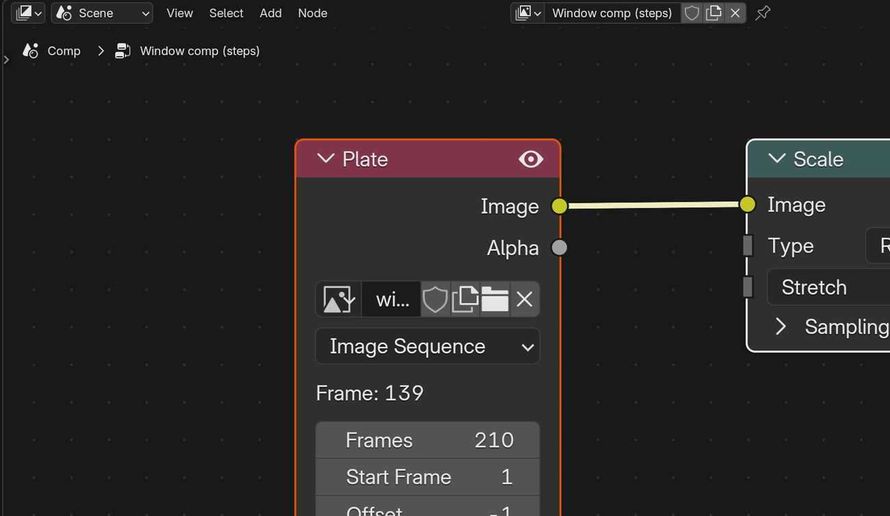
The Plate node and a Scale node set to Render Size › Stretch.It should look like this
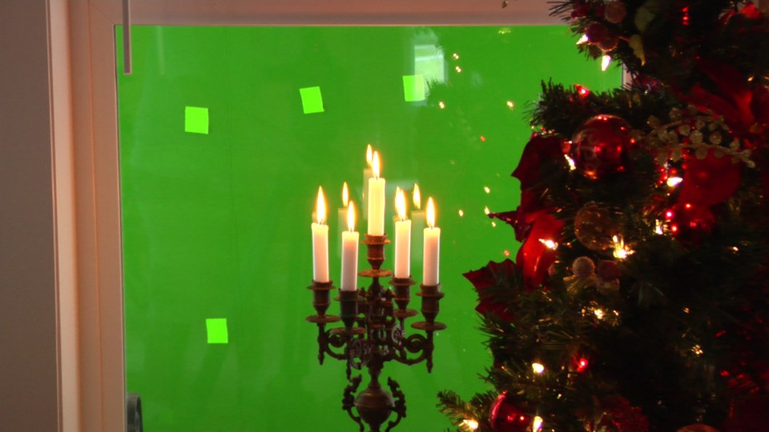
The plate at frame 140.
2Shift+A › Keying › Keying.
Click
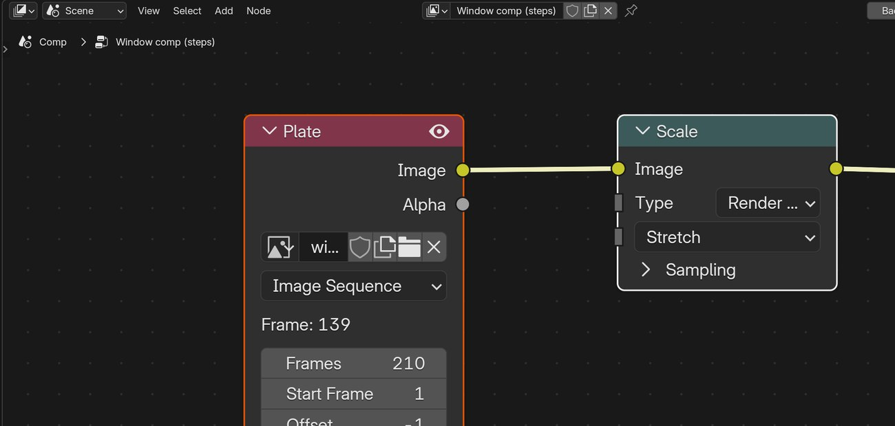
The Add › Keying menu: choose Keying.
3Connect Scale to Keying. Click the Key Color swatch, then the eyedropper, and click the main green (not a pale square).
Click
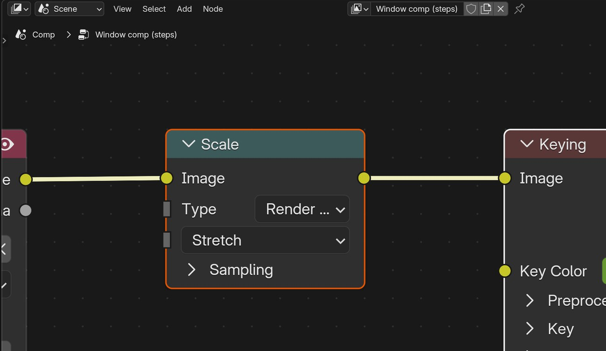
Scale into Keying; Key Color shows the sampled green. Black Level and White Level are under Key.It should look like this
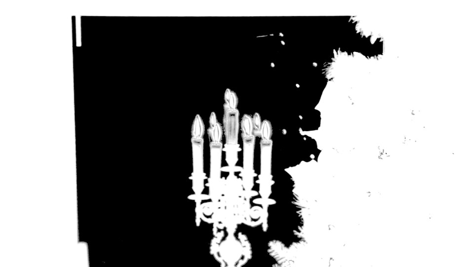
The Matte: window black, room white.
STEP CHECKLIST
GLOSSARY
Key: Removing a colour to make it transparent
Matte: The black-and-white image that says what is visible
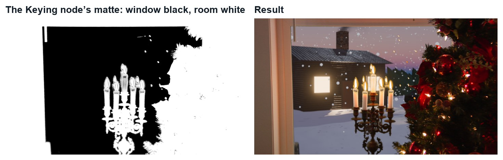
Real renders at frame 140: the Keying node’s matte, and the result over the new view.
WHYHere the green screen is the background, not behind an actor. The key keeps the room and makes the window a hole.
CHECKA matte where the window is black and the room, tree and candles are solid white.
FIXMarker squares still show? You picked the key colour from a square; pick it from the main green.
WORKED EXAMPLE · DIFFERENT OBJECTDemo settings: key colour sampled from the screen, Black Level 0.3, White Level 0.7.
STRETCH (AFTER THE CHECK PASSES)Use the Edges output to see where the key is semi-transparent.
Method basis: B6. Values and sequence are authored for this project.
04
Place your view and make it follow the camera
IN SHORTImage → Scale → Transform → Stabilize 2D (Invert) → Blur; Alpha Over on the plate; keyed room on top.
READ ALOUD
DOCUMENT: Your own image (a render or a photo you took) SELECT: Image, Scale, Transform, Stabilize 2D, Blur, two Alpha Over nodes TOOLS / ROUTE: Add › Transform › Stabilize 2D · tick Invert · Color › Alpha Over
Add your background image. Use a render of your own (the demo uses our Winter Cottage scene) or a photo you took.
Scale it (Render Size › Crop), then add a Transform node to position and size it for frame 1.
Add a Stabilize 2D node, choose your clip, and tick Invert. The background now moves the way the plate does.
Add a small Blur (about 5 px): the world outside is further away than the candles, so it should be softer.
Alpha Over 1: plate as Background, your view as Foreground. Alpha Over 2: that result as Background, the keyed plate as Foreground. Scrub: the view should grow as the camera pushes in.
Action by action: what to click, and what you should see
1Add an Image node for your view, a Scale node (Render Size › Crop) and a Transform node (Shift+A › Transform). Set X, Y and Scale so the view sits in the window on frame 1.
Click
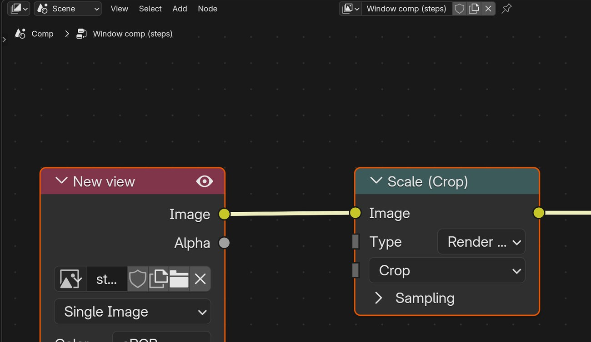
New view → Scale (Crop) → Transform, with X −120, Y 60, Scale 1.15.
2Shift+A › Tracking › Stabilize 2D.
Click
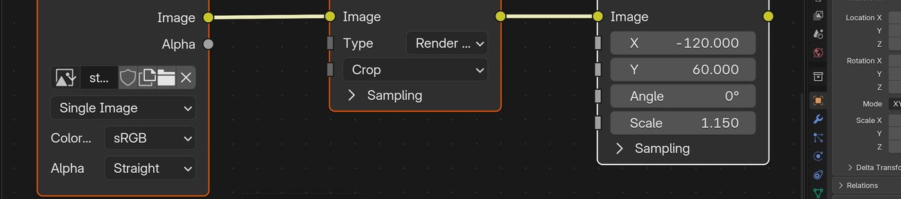
The Add › Tracking menu: Stabilize 2D is the second item.
3In the Stabilize 2D node choose your clip and tick Invert.
Click
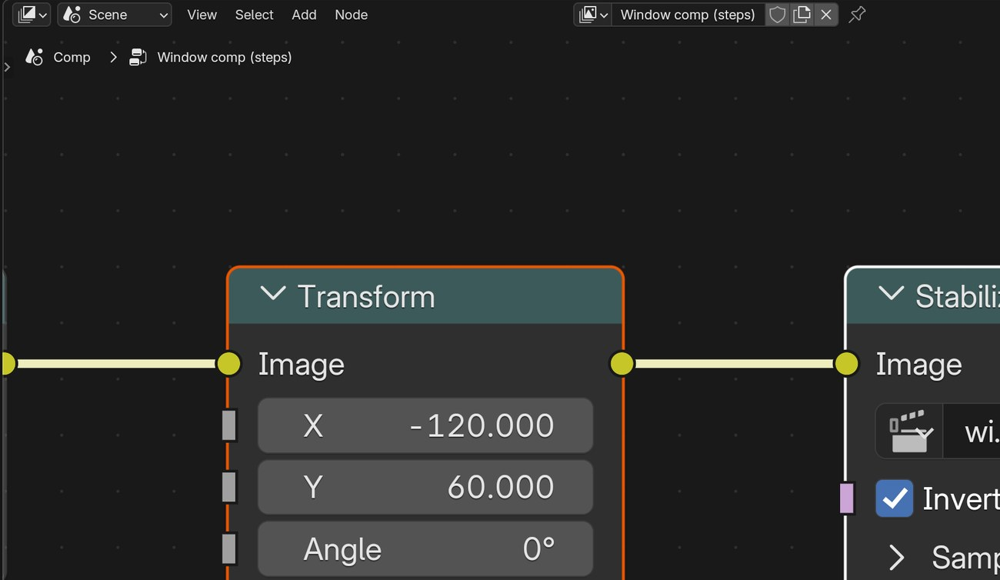
Transform into Stabilize 2D, with the clip chosen and Invert ticked.
4Add a Blur node with Size 5 and 5 after it.
Click
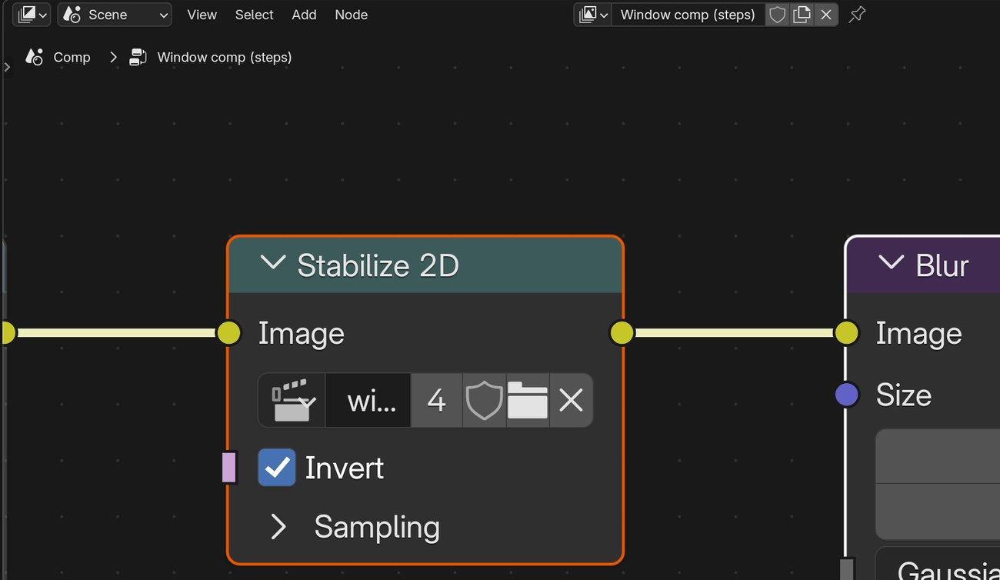
Stabilize 2D into Blur, Size 5.
5Add two Alpha Over nodes. First: plate (Scale) into Background, Blur into Foreground. Second: the first into Background, Keying’s Image into Foreground.
Click
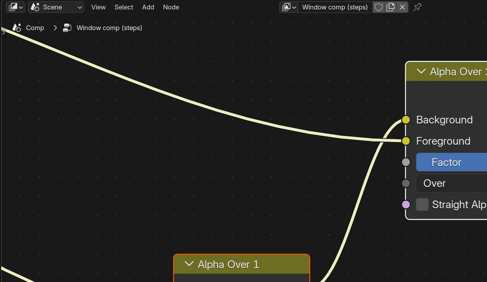
Alpha Over 1 feeds the Background of Alpha Over 2.It should look like this
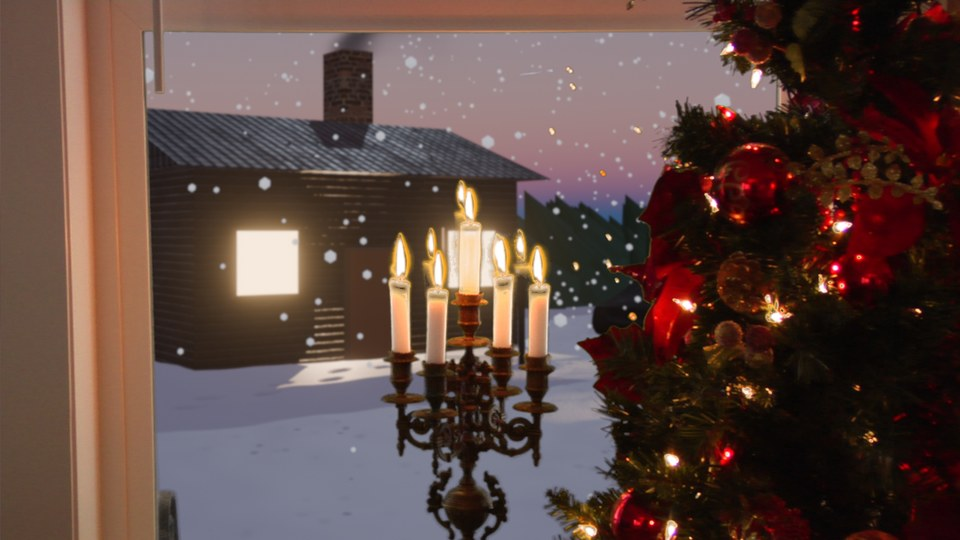
The view sits behind the candles and tree.
6Look at the whole tree with Backdrop on, then scrub from frame 1 to 210.
Click
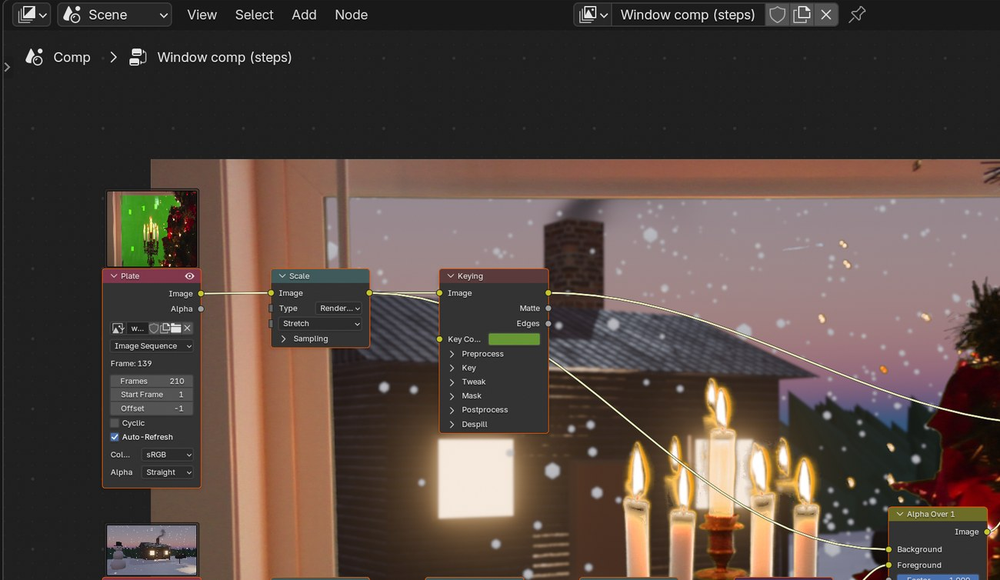
The complete node tree with the result behind it.It should look like this
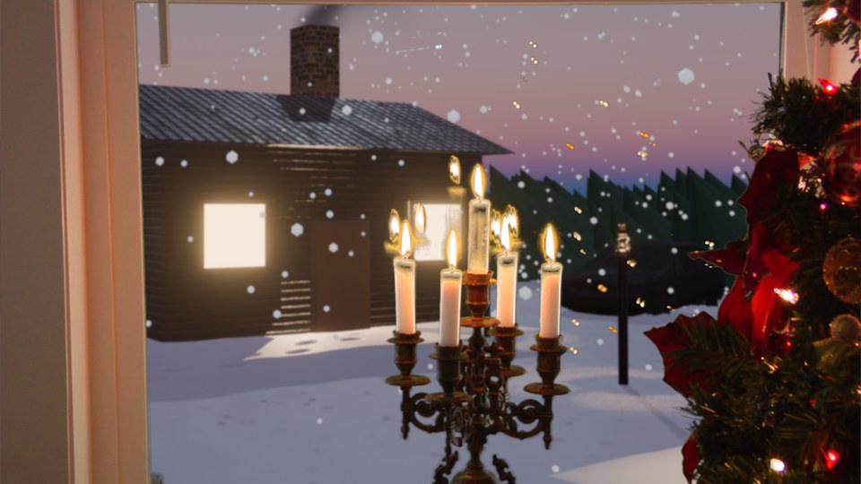
Frame 210: the cottage has grown with the push-in.
Wrong vs right
Wrong
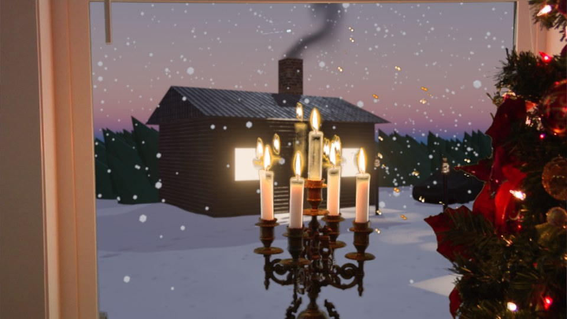
No Stabilize 2D: the view stays the same size while the window grows.RightStabilize 2D with Invert: the view follows the camera.
Click by click (real Blender screenshots)
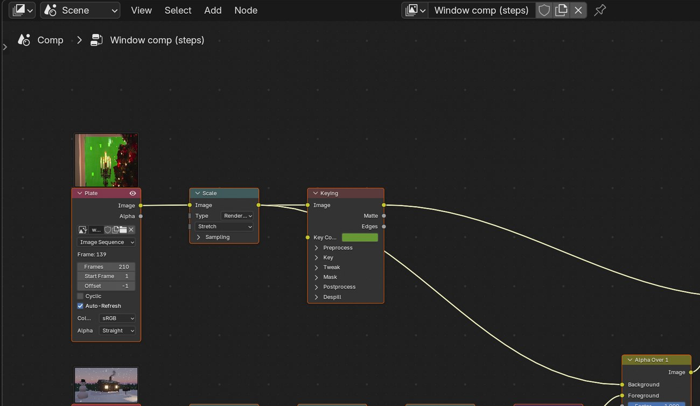
The whole demo node tree, without the backdrop.
What went wrong when we built the demo: our first composite shrank and slid around the frame, because the moving background was setting the size of the picture. Putting the plate in first fixed it.
STEP CHECKLIST
GLOSSARY
Invert (Stabilize 2D): Applies the measured camera motion instead of cancelling it
Depth of field: Things far from the focus point look softer
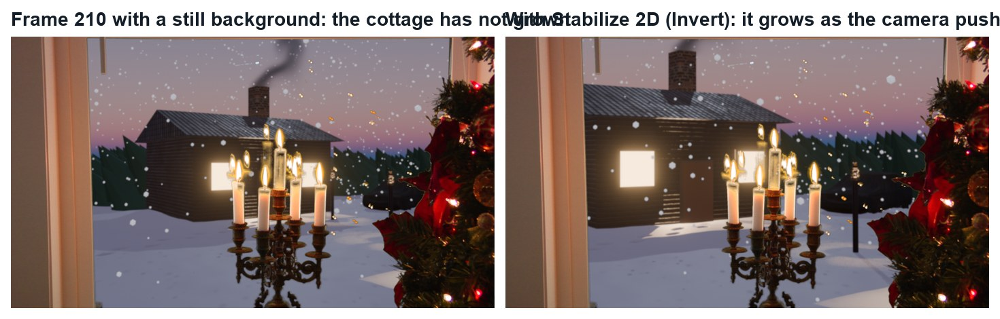
Real renders of frame 210: with a still background (left) the cottage has not grown; with Stabilize 2D inverted (right) it has.
WHYA still picture behind a moving window looks like a poster. Giving it the plate’s own motion makes it part of the world.
CHECKA view that stays locked to the window frame through the whole push-in.
FIXWhole picture shrinks or slides? Put the plate into the first Alpha Over’s Background so the plate sets the frame. View moves the wrong way? Tick Invert.
WORKED EXAMPLE · DIFFERENT OBJECTDemo values: Transform X −120, Y 60, Scale 1.15; Blur 5.
STRETCH (AFTER THE CHECK PASSES)Add falling snow as a second layer that moves slightly less than the cottage.
Method basis: B7 · B5. Values and sequence are authored for this project.
05
Practical check: the director’s change, then render and defend
IN SHORTRead the card; pick the part; change a copy; render; defend; credit.
READ ALOUD
DOCUMENT: Your composite · the director’s card SELECT: Whatever the card requires TOOLS / ROUTE: Your own decisions
Read your director’s card (below).
Decide which part it touches: the view, its placement, the key or the grade.
Make the change in a copy of your file and render the shot (FFmpeg, H.264).
Screen it and explain how the view follows the camera.
Credit the plate (Hollywood Camera Work) and your background image.
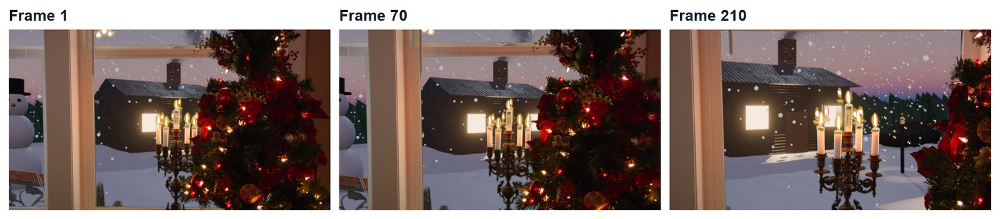
Three real frames from the finished demo.
Card
The director says
1 · Your world
“Outside is a place you built: use your own render.”
2 · City
“We are 40 floors up: a city skyline at night.”
3 · Something passes
“Something moves past the window halfway through.”
4 · Glass
“It looks like there is no glass. Add a faint reflection of the room.”
Independent evidence: the main achievement evidence for this tutorial.
STEP CHECKLIST
GLOSSARY
Grade: The colour treatment of a shot
WHYOnce the motion is solved, the view outside can be anything. That is why productions shoot windows on green.
CHECKA changed shot that meets the card, rendered, with an explanation and credits.
FIXStuck? Name the part the card touches first. (Independent step: the Coach can explain tools but not decide your changes.)
WORKED EXAMPLE · DIFFERENT OBJECTWorked example on a different shot: a “daytime” card needed only a new image and a brighter, cooler grade.
STRETCH (AFTER THE CHECK PASSES)Take two cards at once.
Method basis: B5. Values and sequence are authored for this project.
Before you submit
Student QA.
Evidence conversation
Keep it short and specific.
SENTENCE FRAMESI used markers ___ because ___. · The view follows the camera because ___. · For the director’s card I changed ___ using ___.
Figures marked Illustration are drawn, not screenshots. Step values are starting points authored for this project. Draft for teacher review; not yet classroom-piloted.